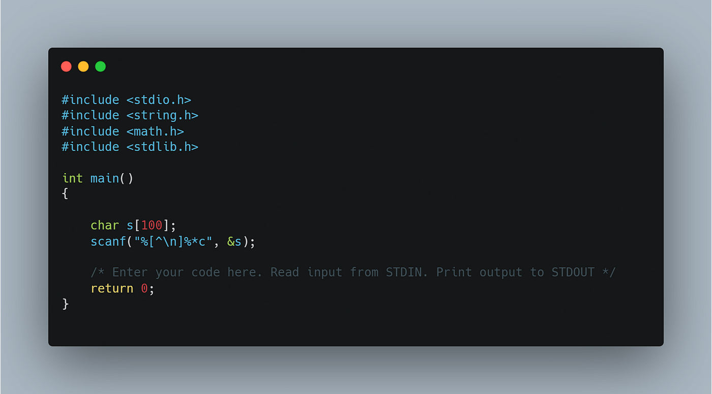

Lenguaje de Programación: C
Características principales
- Lenguaje compilado y estructurado
- Alto rendimiento y bajo nivel
- Permite acceso directo a memoria (uso de punteros)
- Ideal para programación de sistemas y hardware
- Sintaxis sencilla pero poderosa
- Base de muchos lenguajes modernos (como C++, Java, C#)
- Portabilidad mediante estandarización (ANSI C)
Tipos de datos
- Enteros: int, short, long, unsigned
- Decimales: float, double, long double
- Caracteres: char
- Booleanos: No tiene tipo booleano nativo (se usa int: 0 o 1)
- Estructuras personalizadas: struct, enum, union
- Punteros: Permiten manipular direcciones de memoria
Ventajas
- Muy rápido y eficiente
- Control total sobre hardware y memoria
- Ideal para sistemas operativos y software embebido
- Sintaxis directa y mínima
- Gran comunidad y recursos disponibles
Desventajas
- No es orientado a objetos
- Gestión manual de memoria propensa a errores
- Poca abstracción comparado con lenguajes modernos
- No tiene manejo de errores incorporado
- Curva de aprendizaje más técnica
Codigo del ejemplo: "hola mundo"
